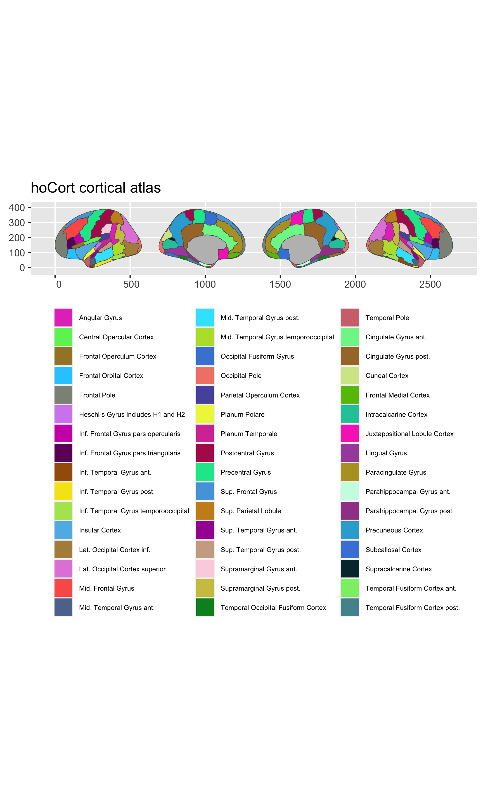

This package contains dataset for plotting the Harvard-Oxford cortical atlas ggseg and ggseg3d.
Makris,et al. (2006) Schizophrenia research 83(2-3):155-151 pubmed
Installation
We recommend installing the ggseg-atlases through the ggseg r-universe:
# Enable this universe
options(repos = c(
ggseg = 'https://ggseg.r-universe.dev',
CRAN = 'https://cloud.r-project.org'))
# Install some packages
install.packages('ggsegHO')You can install the released version of ggsegHO from GitHub with:
# install.packages("remotes")
remotes::install_github("LCBC-UiO/ggsegHO")Example
This is a basic example which shows you how to solve a common problem:
library(ggseg)
#> Warning: package 'ggseg' was built under R version 4.1.1
#> Loading required package: ggplot2
library(ggplot2)
plot(hoCort) +
theme(legend.position = "bottom",
legend.text = element_text(size = 6)) +
guides(fill = guide_legend(ncol = 3))
Please note that the ‘ggsegHO’ project is released with a Contributor Code of Conduct. By contributing to this project, you agree to abide by its terms.